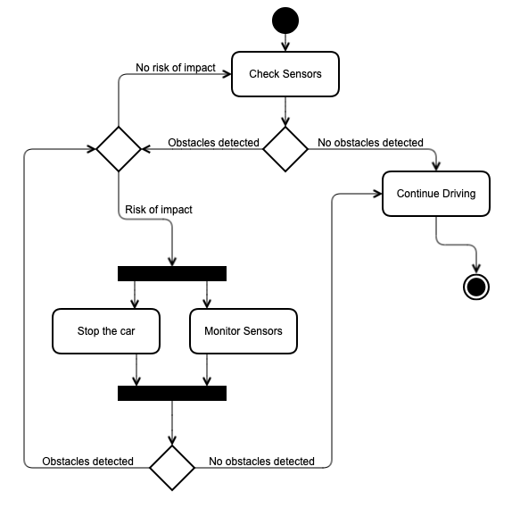

Unit 4: Artefacts
Activity Diagram
Design an activity diagram which shows the relationships and interactivity between the user's behaviour within the driverless car.
Obstacle Detection
I imagine that the below diagram represents the activity that occurs within the cars route calculation system/obstacle detection system once the user has input their desired destination. The car checks it's sensors to ensure that there are no obstacles around, and continues to monitor them until it has reached the requested destination. This is just one of many ways the user's behaviour can interact with the system.
Employee Class Diagram
The class diagram below represents the "Employee" class as programmed in the last module. I have added some methods to add additional functionality to the class itself. I had considered creating a separate class for "Annual Leave" and "Casual Leave". This could've been done by creating an overall "Leave" class from which "Annual" and "Casual" could inherit. However, since I am not interested in storing any other information about the leave apart from the overall balance, this would only pollute the overall design. If I were to store more information, like "destination", "dates" or if I had more leave types (sick leave, marriage leave, unpaid leave, etc.), then it would make sense to create an additional class.

Class Implementation
This is an example implementation of the Employee class diagram.